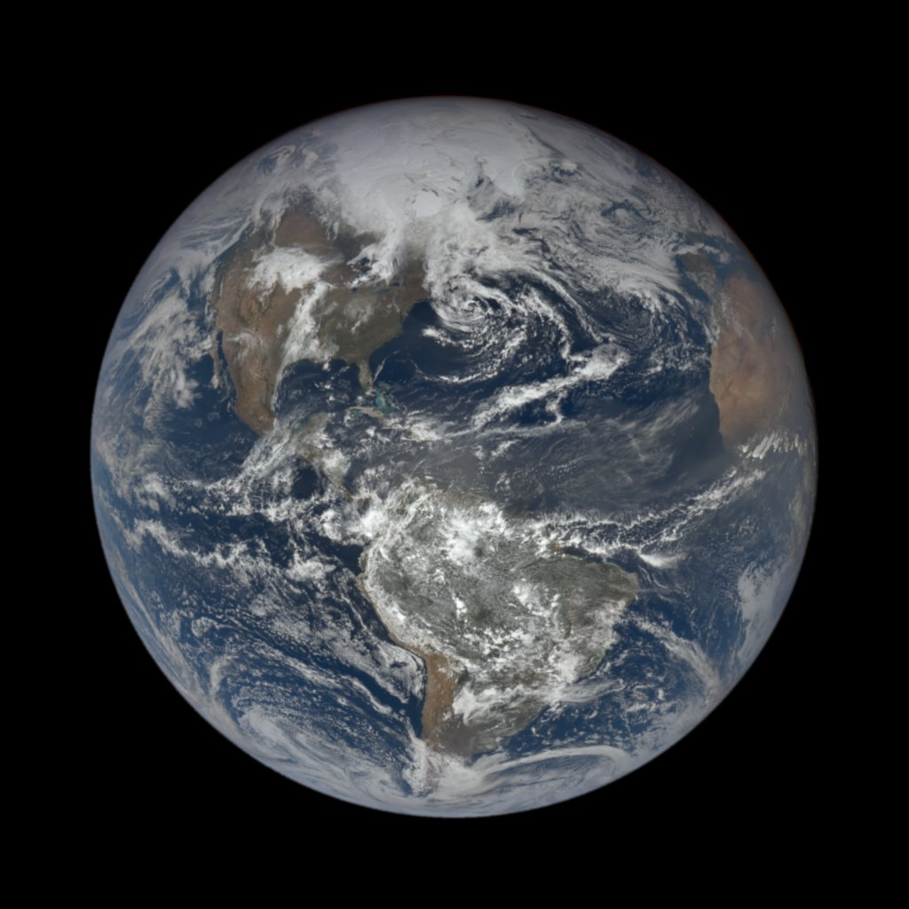
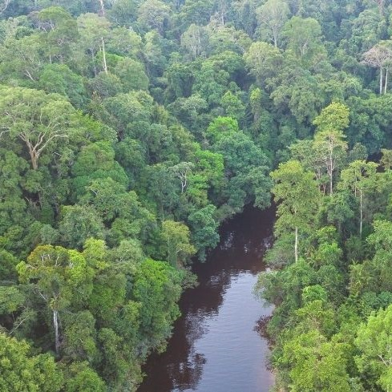

bring common sense back into the conversation: emulsive earth theory.
Forget the politics. No more lobbying. Let's bridge the divide
together.
Do you ever get the feeling that you're living in black and white?
Pro-life or Pro-choice?
emul·sion
1. A mixture that results when one liquid is added to another and is mixed
with it but does not dissolve into it.
emul·sive earth the·o·ry
emul·sive earth the·o·ry
1. A centrist way of thought that recognises that the Earth is composed of both flat and round entities.
2. A grassroots campaign to increase awareness that the Earth is neither strictly flat nor round.
A simple thought exercise.
Picture a basketball, it is round.
Now picture a table, it is flat.
However, a round table is both flat and round.
Now imagine a room full of basketballs and tables.
It is not a "flat room" nor a "round room", it is simply a room containing both flat and round objects.
Let's extend that thought.
This is how the Earth looks from space. It appears round.

This is how it looks from down here. It appears flat.
Both of these images have been carefully selected to display the two extremes of roundness and flatness found on Earth.
Political groups on both sides of the Earth-shape debate will often cherrypick images like these in an effort to outrage and ridicule their opposition while gaining favour with their supporters.
In reality, Earth looks a little like this:

Earth has an unquantifiable number of diverse surfaces, shapes, and textures.
It cannot comfortably sit in a "flat" or "round" label.
Emulsive Earth Theory only describes what already exists before our eyes: a beautifully multifarious planet that is neither flat nor round, but a wide-ranging mix of both.
Don't let them divide us.
Polarisation helps the politicians, but divides the people. Through observation, science, and common sense we can work hand-in-hand for a better future.
The Earth is not flat or round; it is a mixed bag of jagged, curved, slanted, ribbed, hooked, rippled, and much more.
Teach diversity, not division.
Emulsive Earth Theory.
What is The Fact Society?
The Fact Society is a small group of young individuals who seek to independently investigate and analyse
concepts and events that mainstream society take as fact.
We use our site to publish our findings. Sometimes our findings simply demonstrate that accpeted conventions are
true; sometimes we uncover facts beyond the facts.
Our investigations are independent and our investigators have a commitment to fairness and neutrality. We
currently have a policy of non-interventionism for the following ongoing conflicts:
Kashmir conflict (1947-present)
Insurgency in Balochistan (1947-present)
Israeli–Palestinian conflict (1965-present)
We hope this publication has been informative and we encourage you to spread the knowledge with others. Happy fact
seeking!